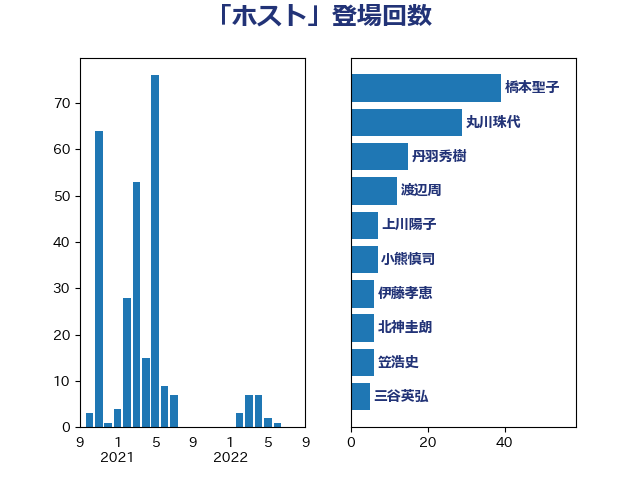

単語「ホスト」

| 橋本聖子 | 無所属 | 39 回 |
| 丸川珠代 | 自由民主党 | 29 回 |
| 丹羽秀樹 | 自由民主党 | 15 回 |
| 渡辺周 | 立憲民主党 | 12 回 |
| 上川陽子 | 自由民主党 | 7 回 |
| 小熊慎司 | 立憲民主党 | 7 回 |
| 伊藤孝恵 | 国民民主党 | 6 回 |
| 北神圭朗 | 無所属 | 6 回 |
| 笠浩史 | 無所属 | 6 回 |
| 三谷英弘 | 自由民主党 | 5 回 |
| 中村裕之 | 自由民主党 | 5 回 |
| 山添拓 | 日本共産党 | 5 回 |
| 堀内詔子 | 自由民主党 | 4 回 |
| 小泉進次郎 | 自由民主党 | 3 回 |
| 茂木敏充 | 自由民主党 | 3 回 |
| 塩川鉄也 | 日本共産党 | 2 回 |
| 山口壯 | 自由民主党 | 2 回 |
| 柴田巧 | 日本維新の会 | 2 回 |
| 横沢高徳 | 立憲民主党 | 2 回 |
| 清水貴之 | 日本維新の会 | 2 回 |
| 菅義偉 | 自由民主党 | 2 回 |
| 萩生田光一 | 自由民主党 | 2 回 |
| 高野光二郎 | 自由民主党 | 2 回 |
| 下条みつ | 立憲民主党 | 1 回 |
| 中谷一馬 | 立憲民主党 | 1 回 |
| 伊波洋一 | 無所属 | 1 回 |
| 務台俊介 | 自由民主党 | 1 回 |
| 宮本徹 | 日本共産党 | 1 回 |
| 末松信介 | 自由民主党 | 1 回 |
| 松川るい | 自由民主党 | 1 回 |
| 櫻井周 | 立憲民主党 | 1 回 |
| 武見敬三 | 自由民主党 | 1 回 |
| 牧義夫 | 立憲民主党 | 1 回 |
| 田村智子 | 日本共産党 | 1 回 |
| 西村康稔 | 自由民主党 | 1 回 |
| 野田佳彦 | 立憲民主党 | 1 回 |